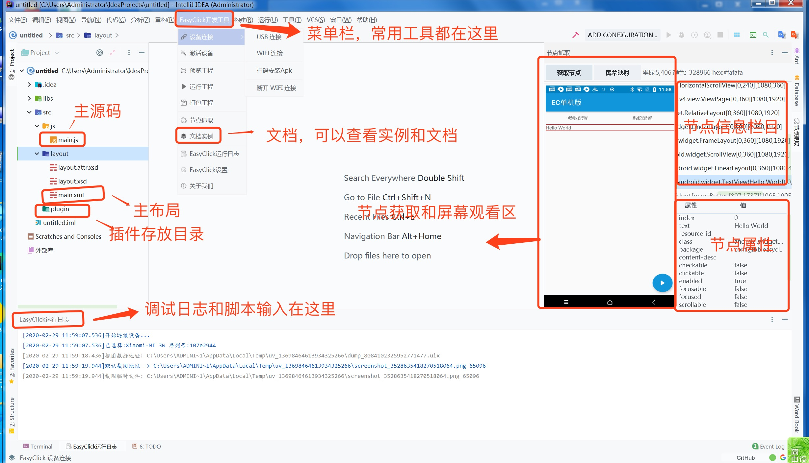

1. 开发环境安装
- 百度网盘下载 提取码：7bhy
- 天翼云下载 密码：nup3
- QQ群下载：777164022
下载idea开发工具，文件以idea-xxx开头的，也可以自行到idea官网下载
IDEA官网下载地址
- 网页地址：https://www.jetbrains.com/idea/download/other.html
- 商业版本JS智能提示：2019.3.4 for Windows (exe) https://download.jetbrains.com/idea/ideaIU-2019.3.4.exe
- 社区版本(免费)：2019.3.4 for Windows (exe) https://download.jetbrains.com/idea/ideaIC-2019.3.4.exe
- 网页地址：https://www.jetbrains.com/idea/download/other.html
安装后，打开bin/idea64.exe文件开始运行

下载EasyClick最新版本的IDEA插件，并按照到IDEA中，安装教程：https://blog.csdn.net/qq_35246620/article/details/78289074
2. 主界面预览
